Next litter at Kika's Point Weimaraners is planned for year 2012. If you're interested in Kika's Point puppy, please feel free to contact us on our email kikas.point@gmail.com or via mobilephone 0038631249425.
We'll give away our puppies only to selected homes - to responsible and active owners. On our waiting list we give priority to those who are ready to participate with their grey pups in sport or hunting activities and/or dog shows.
Want to know why are we giving our pups only to active homes? Check the video of Kika's first litter and you'll get it;-)
13.08.2011
Puppies 2012
25.07.2011
World Dog Show Paris 2011
From 7th of July till 10th of July there was a World Dog Show held in Paris. For the first time we have entered Kika on such a big show and also her hendler (myself:-)) was a pure beginner on such a big dog event. And Kika gained a great result!
The first day Kika Aruba Imperium Star was placed 2nd in strong Working Class on the French Champion Show. First in Working Class was Leeloo who is a beautiful bitch and I'm honoured judge Mr. KLIBENSTEIN Horst (D) had quite some difficulities to choose between beautiful Leeloo and Kika:-) I think we ran a mile or so.
The second day on the World Dog Show 2011 our Kika Aruba Imperium Star came 3rd in strong Working Class under judge Mr. BERCHTOLD Peter Friedrich. Kika was placed after Leeloo who is now double World Winner (in 2009 and in 2011) and Laila (both from Fala Lovea team). Kika had a really bad presentation of the movement part in the ring on this day (jumping, pulling, sniffin' the floor...:-)) so I was quite suprised when we were placed.
Would like to thank to everybody on nice words about our Kika. It was nice to meet you all! And there were sooo many people left who I didn't get a chance to talk to - I hope next time!
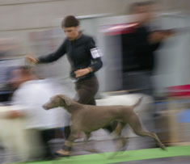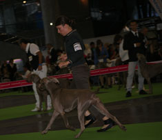 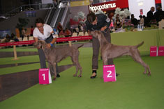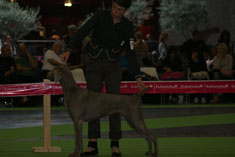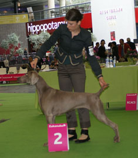
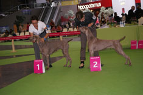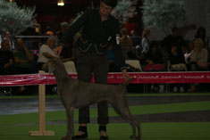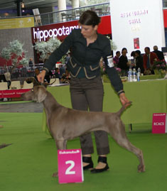
The first day Kika Aruba Imperium Star was placed 2nd in strong Working Class on the French Champion Show. First in Working Class was Leeloo who is a beautiful bitch and I'm honoured judge Mr. KLIBENSTEIN Horst (D) had quite some difficulities to choose between beautiful Leeloo and Kika:-) I think we ran a mile or so.
The second day on the World Dog Show 2011 our Kika Aruba Imperium Star came 3rd in strong Working Class under judge Mr. BERCHTOLD Peter Friedrich. Kika was placed after Leeloo who is now double World Winner (in 2009 and in 2011) and Laila (both from Fala Lovea team). Kika had a really bad presentation of the movement part in the ring on this day (jumping, pulling, sniffin' the floor...:-)) so I was quite suprised when we were placed.
Would like to thank to everybody on nice words about our Kika. It was nice to meet you all! And there were sooo many people left who I didn't get a chance to talk to - I hope next time!
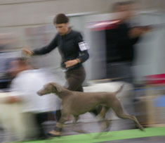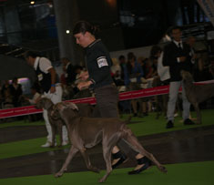
{kind=link}
{kind=link}
 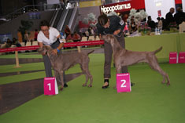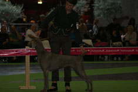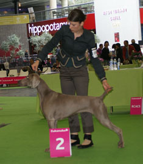
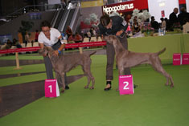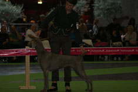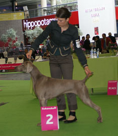
{kind=link}
{kind=link}
{kind=link}
{kind=link}
{kind=link}
01.12.2010
All puppies are now reserved
All Kika's puppies from our first litter are already reserved.
If you're interested in Kika's Point puppy, please feel free to contact us. We're already taking reservations for our next litter that is planned for the end of year 2011.
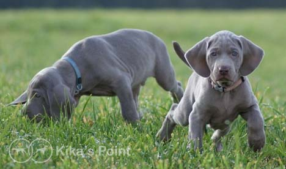
If you're interested in Kika's Point puppy, please feel free to contact us. We're already taking reservations for our next litter that is planned for the end of year 2011.
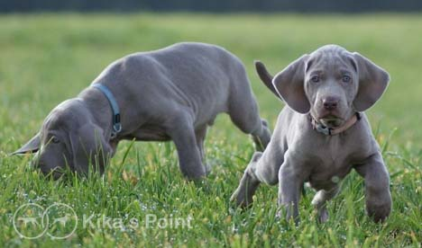
22.11.2010
One female puppy is still avaliable
Puppies out of Kika (CHJ SLO Kika Aruba Imperium Star, FuW) and Homer (Ch. Nani's Clay Pigeon, JH, NSD, SD) are almost 7 weeks old. One female puppy is still looking for a new home. If you're interested in this female write us on email: kikas.point@gmail.com or call us on 0038631 249 425. Only the best homes will be accepted for this girl.